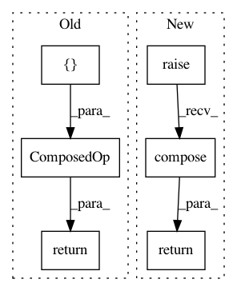

9f7ca132eba22fc77b496162a51ea40c0d0cccf5,qiskit/aqua/operators/primitive_ops/matrix_op.py,MatrixOp,compose,#MatrixOp#Any#,118
Before Change
return MatrixOp(self.primitive.compose(other.primitive, front=True), // type: ignore
coeff=self.coeff * other.coeff)
return ComposedOp([self, other])
def to_matrix(self, massive: bool = False) -> np.ndarray:
return self.primitive.data * self.coeff // type: ignore
After Change
return MatrixOp(self.primitive.compose(other.primitive, front=True), // type: ignore
coeff=self.coeff * other.coeff)
return super(MatrixOp, self).compose(other)
def to_matrix(self, massive: bool = False) -> np.ndarray:
return self.primitive.data * self.coeff // type: ignore
In pattern: SUPERPATTERN
Frequency: 3
Non-data size: 6
Instances
Project Name: Qiskit/qiskit-aqua
Commit Name: 9f7ca132eba22fc77b496162a51ea40c0d0cccf5
Time: 2020-08-12
Author: mirotomasik@gmail.com
File Name: qiskit/aqua/operators/primitive_ops/matrix_op.py
Class Name: MatrixOp
Method Name: compose
Project Name: Qiskit/qiskit-aqua
Commit Name: 9f7ca132eba22fc77b496162a51ea40c0d0cccf5
Time: 2020-08-12
Author: mirotomasik@gmail.com
File Name: qiskit/aqua/operators/primitive_ops/circuit_op.py
Class Name: CircuitOp
Method Name: compose
Project Name: Qiskit/qiskit-aqua
Commit Name: 9f7ca132eba22fc77b496162a51ea40c0d0cccf5
Time: 2020-08-12
Author: mirotomasik@gmail.com
File Name: qiskit/aqua/operators/primitive_ops/pauli_op.py
Class Name: PauliOp
Method Name: compose